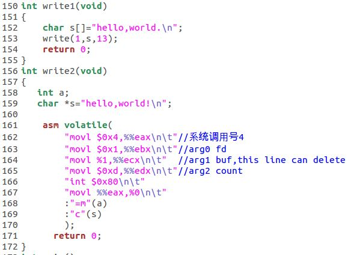
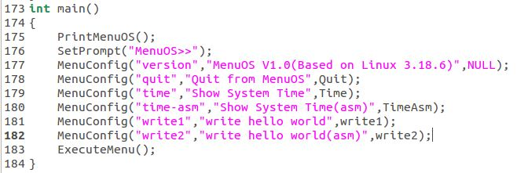

薛兆江 + 原创作品转载请注明出处 + 《Linux内核分析》MOOC课程http://mooc.study.163.com/course/USTC-1000029000
使用gdb跟踪分析一个系统调用内核函数，分析系统调用的过程，从system_call开始到iret结束之间的整个过程，并画出简要准确的流程图
1.main.c中start_kernel函数：trap_init()函数中有一句 set_system_trap_gate(SYSCALL_VECTOR,&system_call)。
其中：SYSCALL_VECTOR：系统调用的中断向量（#define SYSCALL_VECTOR 0x80），&system_call：汇编代码入口
2.一执行int $0x80，系统直接跳转到system_call。
3.SAVE_ALL：保存现场
4.call *sys_call_table(,%eax,4)调用了系统调度处理函数，eax存的是系统调用号，是实际的系统调度程序。 sys_call_table：系统调用分派表
5.syscall_after_all：保存返回值
6.syscall退出，若有sys_exit_work，则进入sys_exit_work:执行的目的是处理进程之间的信号或者进程调度。
7.若无sys_exit_work，就执行restore_all恢复现场。
8.返回用户态，INTERRUPT_RETURN <=> iret，结束。
在LinuxKernel/menu/test.c中添加如图所示的代码
 运行自动编译脚本，生成根文件系统
void __init trap_init(void)
{
int i;
#ifdef CONFIG_EISA
void __iomem *p = early_ioremap(0x0FFFD9, 4);
if (readl(p) == 'E' + ('I'<<8) + ('S'<<16) + ('A'<<24))
EISA_bus = 1;
early_iounmap(p, 4);
#endif
set_intr_gate(X86_TRAP_DE, divide_error);
set_intr_gate_ist(X86_TRAP_NMI, &nmi, NMI_STACK);
/* int4 can be called from all */
set_system_intr_gate(X86_TRAP_OF, &overflow);
set_intr_gate(X86_TRAP_BR, bounds);
set_intr_gate(X86_TRAP_UD, invalid_op);
set_intr_gate(X86_TRAP_NM, device_not_available);
#ifdef CONFIG_X86_32
set_task_gate(X86_TRAP_DF, GDT_ENTRY_DOUBLEFAULT_TSS);
#else
set_intr_gate_ist(X86_TRAP_DF, &double_fault, DOUBLEFAULT_STACK);
#endif
set_intr_gate(X86_TRAP_OLD_MF, coprocessor_segment_overrun);
set_intr_gate(X86_TRAP_TS, invalid_TSS);
set_intr_gate(X86_TRAP_NP, segment_not_present);
set_intr_gate(X86_TRAP_SS, stack_segment);
set_intr_gate(X86_TRAP_GP, general_protection);
set_intr_gate(X86_TRAP_SPURIOUS, spurious_interrupt_bug);
set_intr_gate(X86_TRAP_MF, coprocessor_error);
set_intr_gate(X86_TRAP_AC, alignment_check);
#ifdef CONFIG_X86_MCE
set_intr_gate_ist(X86_TRAP_MC, &machine_check, MCE_STACK);
#endif
set_intr_gate(X86_TRAP_XF, simd_coprocessor_error);
/* Reserve all the builtin and the syscall vector: */
for (i = 0; i < FIRST_EXTERNAL_VECTOR; i++)
set_bit(i, used_vectors);
#ifdef CONFIG_IA32_EMULATION
set_system_intr_gate(IA32_SYSCALL_VECTOR, ia32_syscall);
set_bit(IA32_SYSCALL_VECTOR, used_vectors);
#endif
#ifdef CONFIG_X86_32
set_system_trap_gate(SYSCALL_VECTOR, &system_call);
set_bit(SYSCALL_VECTOR, used_vectors);
#endif
/*
* Set the IDT descriptor to a fixed read-only location, so that the
* "sidt" instruction will not leak the location of the kernel, and
* to defend the IDT against arbitrary memory write vulnerabilities.
* It will be reloaded in cpu_init() */
__set_fixmap(FIX_RO_IDT, __pa_symbol(idt_table), PAGE_KERNEL_RO);
idt_descr.address = fix_to_virt(FIX_RO_IDT);
/*
* Should be a barrier for any external CPU state:
*/
cpu_init();
x86_init.irqs.trap_init();
#ifdef CONFIG_X86_64
memcpy(&debug_idt_table, &idt_table, IDT_ENTRIES * 16);
set_nmi_gate(X86_TRAP_DB, &debug);
set_nmi_gate(X86_TRAP_BP, &int3);
#endif
}
第839行set_system_trap_gate(SYSCALL_VECTOR, &system_call);设置了系统调用的中断向量（即系统调用的入口地址），即system_call“函数”的地址绑定到中断向量。所以在int $0x80之后，就转到中断向量，从而执行中断处理程序（系统调用程序）。也就是说中断向量指向的中断处理程序就是int $0x80指令执行完之后接着执行的指令的地方。
ENTRY(system_call)
RING0_INT_FRAME # can't unwind into user space anyway
ASM_CLAC
pushl_cfi %eax # save orig_eax
SAVE_ALL//保存现场
GET_THREAD_INFO(%ebp)//获取thread_info结构的信息
# system call tracing in operation / emulation
testl $_TIF_WORK_SYSCALL_ENTRY,TI_flags(%ebp)// 测试是否有系统跟踪
jnz syscall_trace_entry//如果有系统跟踪，先执行，然后再回来
cmpl $(NR_syscalls), %eax//比较eax中的系统调用号和最大syscall，超过则无效
jae syscall_badsys//无效的系统调用 直接返回
syscall_call:
call *sys_call_table(,%eax,4)//系统调用处理程序使用eax传过来的系统调用号查表来执行相应函数
syscall_after_call://保存返回值
movl %eax,PT_EAX(%esp) # store the return value
syscall_exit:
LOCKDEP_SYS_EXIT
DISABLE_INTERRUPTS(CLBR_ANY) # make sure we don't miss an interrupt
# setting need_resched or sigpending
# between sampling and the iret
TRACE_IRQS_OFF
movl TI_flags(%ebp), %ecx
testl $_TIF_ALLWORK_MASK, %ecx # current->work//检测是否所有工作已完成
jne syscall_exit_work//未完成，则去执行这些任务
restore_all:
TRACE_IRQS_IRET
restore_all_notrace:
#ifdef CONFIG_X86_ESPFIX32
movl PT_EFLAGS(%esp), %eax # mix EFLAGS, SS and CS
# Warning: PT_OLDSS(%esp) contains the wrong/random values if we
# are returning to the kernel.
# See comments in process.c:copy_thread() for details.
movb PT_OLDSS(%esp), %ah
movb PT_CS(%esp), %al
andl $(X86_EFLAGS_VM | (SEGMENT_TI_MASK << 8) | SEGMENT_RPL_MASK), %eax
cmpl $((SEGMENT_LDT << 8) | USER_RPL), %eax
CFI_REMEMBER_STATE
je ldt_ss # returning to user-space with LDT SS
#endif
restore_nocheck://恢复现场
RESTORE_REGS 4 # skip orig_eax/error_code
irq_return:
INTERRUPT_RETURN
.section .fixup,"ax"
.macro SAVE_ALL
cld
PUSH_GS
pushl_cfi %fs
/*CFI_REL_OFFSET fs, 0;*/
pushl_cfi %es
/*CFI_REL_OFFSET es, 0;*/
pushl_cfi %ds
/*CFI_REL_OFFSET ds, 0;*/
pushl_cfi %eax
CFI_REL_OFFSET eax, 0
pushl_cfi %ebp
CFI_REL_OFFSET ebp, 0
pushl_cfi %edi
CFI_REL_OFFSET edi, 0
pushl_cfi %esi
CFI_REL_OFFSET esi, 0
pushl_cfi %edx
CFI_REL_OFFSET edx, 0
pushl_cfi %ecx
CFI_REL_OFFSET ecx, 0
pushl_cfi %ebx
CFI_REL_OFFSET ebx, 0
movl $(__USER_DS), %edx
movl %edx, %ds
movl %edx, %es
movl $(__KERNEL_PERCPU), %edx
movl %edx, %fs
SET_KERNEL_GS %edx
.endm
指令中的一些小疑惑的地方：.macro和.endm，用.MACRO指令你可以定义一个宏，可以把需要重复执行的一段代码，或者是一组指令缩写成一个宏
在这段代码中，保存了相关寄存器的值。它们是：ES,DS,EAX,EBP,EDI,ESI,EDX,ECX,EBX等等。从这里寄存器的顺序可以知道压栈的最后压入的是ebx，这里压入的栈是内核栈。
.macro RESTORE_INT_REGS
popl_cfi %ebx
CFI_RESTORE ebx
popl_cfi %ecx
CFI_RESTORE ecx
popl_cfi %edx
CFI_RESTORE edx
popl_cfi %esi
CFI_RESTORE esi
popl_cfi %edi
CFI_RESTORE edi
popl_cfi %ebp
CFI_RESTORE ebp
popl_cfi %eax
CFI_RESTORE eax
.endm
.macro RESTORE_REGS pop=0
RESTORE_INT_REGS
1: popl_cfi %ds
/*CFI_RESTORE ds;*/
2: popl_cfi %es
/*CFI_RESTORE es;*/
3: popl_cfi %fs
/*CFI_RESTORE fs;*/
POP_GS \pop
.pushsection .fixup, "ax"
4: movl $0, (%esp)
jmp 1b
5: movl $0, (%esp)
jmp 2b
6: movl $0, (%esp)
jmp 3b
.popsection
_ASM_EXTABLE(1b,4b)
_ASM_EXTABLE(2b,5b)
_ASM_EXTABLE(3b,6b)
POP_GS_EX
.endm
从上面代码中可以看出SAVE_ALL和RESTORE_INT_REGS是对应的
源码几百行过于复杂，孟老师将它简化几十行的汇编伪代码：
.macro INTERRUPT_RETURN
iret
.endm
.marco SAVE_ALL
...
.endm
.macro RESTORE_INT_REGS
...
.endm
ENTRY（system_call）
SAVE_ALL
syscall_call:
call *sys_call_table(%eax,4)
movl %eax,PT_EAX(%esp) #store the return value
syscall_exit:
testl $_TLF_ALLWORK_MASK,%ecx #current->work//检查是否还有其它工作要完成
jne syscall_exit_work
restore_all://恢复处理器状态
RESTORE_INT_REGS
irq_return:
INTERRUPT_RETURN
ENDPROC(system_call)
syscall_exit_work:
testl $_TIF_WORK_SYSCALL_EXIT,%ecx//测试syscall退出信号
jz work_pending //还有其它工作要做
END(syscall_exit_work)
work_pending:
testb $_TIF_NEED_RESCHED,%cl //检查是否需要重新调度
jz work_notifysig //不需要重新调度
work_resched://需要重新调度
call schedule //调度进程
jz retore_all//没有其它的事,则恢复处理器状态
work_notifysig: #deal with pending signals//处理挂起的信号
...
END(work_pending)
int 0x80之后发生了什么呢？
第一步硬件细节：把cs:eip的值存储内核栈中，把ss:esp的值存储内核栈中，把eflags的值存储内核栈中
第二步硬件细节：更新cs:eip的值为0x80的中断服务函数
第三步硬件细节：将ss:esp的值指向了内核栈中的栈顶位置。
第四步软件细节：SAVE_ALL 在SAVE_ALL中我们看到了都是pushl的操作，其实是将这些值都存储进入了内核栈中。并且存储的部分寄存器的值，将会起到输入参数的功能。
当中断服务函数完成后
第五步软件细节：RESTORE_ALL 与SAVE_ALL的值是对应的。
第六步硬件细节：iret,这个iret与我们函数的ret是不同的，是与上述第一步的硬件的细节相互对应的。 将会从内核栈中将:eflags、ss:esp、cs:eip这三个值依次恢复到寄存器中，并换回到用户态中来。